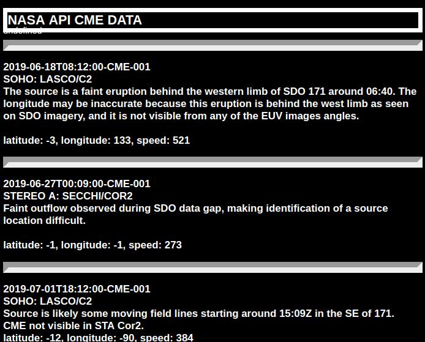
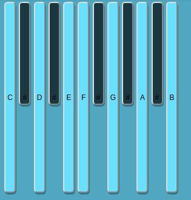

Busy Week.
So in preparation for the upcoming bootcamp, I decided to brush up on various aspects of coding. Rather than going through or back through online courses on javascript etc.. I took the build-something-cool route.
I started off by looking through what free APIs are out there and ran into the free NASA API, which has acess to tons of interesting information on Near-Earth-Objects, Geomagnetic Storm data, and lots of other cool stuff. I decided to build a small project that uses a get JSON request to parse through and display recent Coronal Mass Ejection activity data. Click on the pic below to check it out on my CodePen.

After that I decided to look into an interesting Javascript framework called Tone.JS. It essentially allows one to create music in the browser utilizing various virtual components such as oscillators, sequencers, transport functionality and gain stages to build virtual devices which can be used in conjunction with MIDI and other software platforms like Max/MSP.
Definitely lots of fun. I made a simple keyboard synth with some weird chaining of delay effects. Again, click on the screenshot below if you want to check it out.
